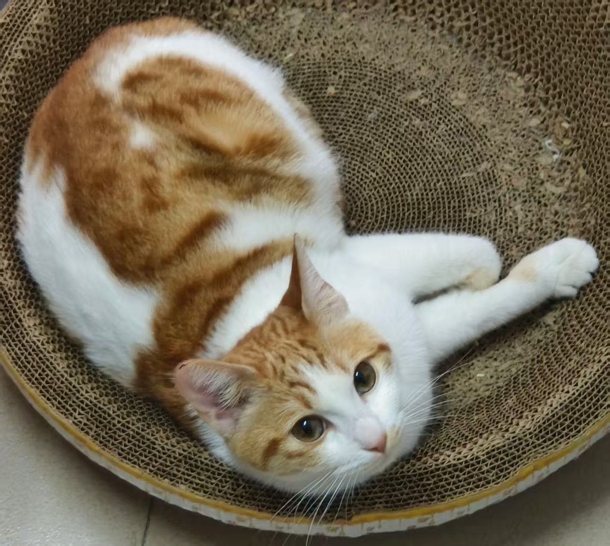

个人简介
我是中山大学高级金融研究院的博士研究生张家豪。目前，我正在新加坡南洋理工大学南洋商学院进行为期1年的联合培养。在此之前，我于2022年在东北财经大学获得经济学学士学位。
我主要关注国有资本、并购重组、资本市场（尤其是股票发行制度对于股票市场的影响）等研究话题，目前已在《金融研究》《管理学报》《科技进步与对策》等权威期刊发表学术论文3篇。在个人荣誉方面，我曾获得2022年广东社会科学学术年会优秀论文奖、第七届大数据、人工智能与金融科技会议优秀论文三等奖、2024年博士研究生国家奖学金，并2次获得中山大学校长奖学金。
我是东北人，出生于辽宁省抚顺市。在科研之外，我喜欢打篮球、唱歌、看电影和演唱会（看演唱会的次数跟我参加学术会议的次数差不多）。我还养了一只非常乖巧的小猫，她叫小花，她很可爱。 
- 邮箱：zhangjh358@mail2.sysu.edu.cn
- 电话：15914410013（不要打，国际漫游很贵，而且我是i人，请邮箱联系！）
- 办公：中山大学西北区 510-202
- 地址：广东省广州市海珠区新港西路 135 号 (邮编：510275)
教育和工作背景
- 2025.08-2026.08 南洋理工大学 南洋商学院 联培博士生
- 2022.09-今 中山大学 高级金融研究院 博士生
- 2018.09-2022.05 东北财经大学 金融学院 本科(经济学学士)
研究兴趣
- 国有资本
- 并购重组
- 技术创新
- 证券监管
发表论文
会议宣讲
- 2022 年 7 月，第六届中国劳动经济学者论坛年会，北京
- 2022 年 7 月，第四届中国工业经济青年论坛暨青年杯论文竞赛，线上
- 2022 年 11 月，中国工业经济学会 2022 年学术年会暨“推动产业数字化与绿色低碳发展”研讨会，线上
- 2022 年 11 月，2022 广东社会科学学术年会“共同富裕与中国公共经济与国家治理现代化”分会场，线上
- 2022 年 11 月，第四届中国青年管理学者论坛·工商管理论坛，线上
- 2023 年 4 月，第十三届中国金融论坛·《金融研究》论坛，广东广州
- 2024 年 10 月， 第七届大数据、人工智能与金融科技会议，广东广州
- 2024 年 10 月， 第四届湾区金融高峰论坛暨国家金融学学术年会，广东深圳
- 2025 年 6 月，国家金融学论坛 Workshop， 广东珠海
- 2025 年 6 月，第三届《金融学季刊》论坛（2025），广东广州
- 2025 年 7 月，中国留美经济学会(CES)2025 年年会，广东广州
- 2025 年 10 月，第八届大数据、人工智能与金融科技会议，广东广州
- 2025 年 10 月，第二届中国会计学优秀青年学者研讨会，江西南昌
- 2025 年 10 月，第二十二届中国金融学年会，江苏南京
获奖情况
- 2020 年全国大学生数学竞赛（非数学类）国家级一等奖、辽宁省级一等奖
- 2022 年广东社会科学学术年会优秀论文奖
- 2023 年中山大学校长奖学金（特等）
- 2024 年中山大学校长奖学金（特等）
- 第七届大数据、人工智能与金融科技会议优秀论文三等奖
- 2024 学年博士研究生国家奖学金
- CSC奖学金